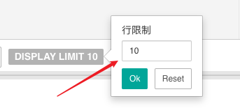

Hello, everyone, why not add a function to limit the number of rows downloaded by the user and the number of SQL rows returned by the query?
I think this function has a great effect in the query performance and data security of redash. Thanks!
Hello, everyone, why not add a function to limit the number of rows downloaded by the user and the number of SQL rows returned by the query?
I think this function has a great effect in the query performance and data security of redash. Thanks!
You can implement a limit on the number of rows returned by a query by including the TOP or LIMIT (depending on your data source) keyword in the query. If you want to make this configurable you can add a parameter to set the number of rows as well e.g.
SELECT col1, col2 FROM myTable LIMIT {{ numrows }} ;
Hi @griffinator76, thanks you reply. Your advice is good, but it would be better to consider to add a function to limit.
Can you elaborate on what kind of “function” you’re imagining? A data source level setting for admins? Something users can set themselves?
Different data sources handle query result limiting in different ways, and some don’t support it at all, so what data sources did you have in mind?
The data sources are mainly Postgresql and presto. People can manually click to set the number of rows displayed without sql limit. If you know supset, this feature like that.

Agree with @griffinator76 this would be complex to implement across all data sources. But it’s an easy change for Postgres and Presto. Just modify your pg.py file to append LIMIT 1000 to every query or whichever you prefer.
Hello K4s1m,
Greetings for the day!!!
Your answer seems very much interesting for me! We do have a redash instance running in AWS and our primary data source is Redshift. I would like to set a default query limit for all user query. With reference to your answer, I found a pg.py file in /app/redash/query_runner/pg.py under docker with the code,
def run_query(self, query, user):
connection = self._get_connection()
_wait(connection, timeout=10)
cursor = connection.cursor()
try:
cursor.execute(query) ----> Shall I just concat LIMIT 100 (eg) here? would that work?
Thanks in advance,
Kylash
Yes that would do it. I like to check for a limit clause first:
if "LIMIT" not in query.upper():
query = query + " LIMIT 1000"
This way I can override the default in a pinch.
Hello K4s1m,
Thanks a ton for your valuable information. I had a ticket in our backlog to test this in next sprint. This would be great if it’s works for us.
May be one more question on next level on same topics. Is there a way to improve Postgres db memory and cpus in docker? The reason why I’m asking this, people tend to query so much and we get I/O errors as there is a memory leak . I assume because of huge result dataset from query, redash needs to spill the data into disk which results in crashing the whole application and we need to restart the server itself.
Is there any guidelines to fix this? Much appreciated if you could redirect/share some steps with me for fixing this.
Last but not least, your timely help and information is a great  help for us. Thanks a ton once again and wishing you a great day!
help for us. Thanks a ton once again and wishing you a great day!
@k4s1m
I’m back with the findings on this case. Unfortunately, it doesn’t seems to be working.
What has been done:
Navigate inside the docker container docker exec --user=“root” -it 19b6d771c573 /bin/bash
root@:/app# cd redash/query_runner/
vi pg.py
Content looks like below after modifying,
def run_query(self, query, user):
connection = self._get_connection()
_wait(connection, timeout=10)
cursor = connection.cursor()
try:
if "LIMIT" not in query.upper():
query_new = query + " LIMIT 10"
print("New query is==>",query_new)
cursor.execute(query_new)
_wait(connection)
5)After the change, I restarted the whole docker with docker restart $(docker ps -q)
The whole set of containers restarted but 19b6d771c573 0.0.0.0:5000->5000/tcp redash_server_
was restarting every 30 secs by itself ( can’t predict much on this)
6) So I launched new instead with the backup of data into new EC2.
7) followed all steps from 1to 4.
8) Now restart the instance itself.
9) things seems to be fine with docker ps.
10) In UI, queried one table but, it was returning " 17544 rows 0 seconds runtime" instead of just 10. Really frustrating!
Could you please help me with the same in fixing? Did i miss something here?
[2021-03-12 00:12:13,551][PID:16][INFO][root] Inserting job for d69830d2a0031a9427afc2a9a8ef33b2 with metadata={'Username': u'kylasam', 'Query ID': 'adhoc'}
[2021-03-12 00:12:13,554][PID:16][INFO][root] [d69830d2a0031a9427afc2a9a8ef33b2] Created new job: 3f7a5998-cae6-445a-8f45-640313456a61
[2021-03-12 00:12:13,555][PID:16][INFO][metrics] method=POST path=/api/query_results endpoint=query_results status=200 content_type=application/json content_length=123 duration=17.08 query_count=7 query_duration=7.29
[2021-03-12 00:12:13,671][PID:14][INFO][metrics] method=GET path=/api/jobs/3f7a5998-cae6-445a-8f45-640313456a61 endpoint=job status=200 content_type=application/json content_length=123 duration=0.76 query_count=2 query_duration=1.96
[2021-03-12 00:12:14,233][PID:14][INFO][metrics] method=GET path=/api/jobs/3f7a5998-cae6-445a-8f45-640313456a61 endpoint=job status=200 content_type=application/json content_length=123 duration=0.71 query_count=2 query_duration=1.93
[2021-03-12 00:12:14,549][PID:14][INFO][metrics] method=POST path=/api/events endpoint=events status=200 content_type=application/json content_length=4 duration=2.36 query_count=2 query_duration=2.27
[2021-03-12 00:12:14,836][PID:10][INFO][metrics] method=GET path=/api/jobs/3f7a5998-cae6-445a-8f45-640313456a61 endpoint=job status=200 content_type=application/json content_length=123 duration=0.76 query_count=2 query_duration=2.02
[2021-03-12 00:12:15,422][PID:11][INFO][metrics] method=GET path=/api/jobs/3f7a5998-cae6-445a-8f45-640313456a61 endpoint=job status=200 content_type=application/json content_length=123 duration=0.74 query_count=2 query_duration=1.97
[2021-03-12 00:12:17,132][PID:11][INFO][metrics] method=GET path=/api/jobs/3f7a5998-cae6-445a-8f45-640313456a61 endpoint=job status=200 content_type=application/json content_length=123 duration=0.75 query_count=2 query_duration=2.02
[2021-03-12 00:12:18,062][PID:10][INFO][metrics] method=GET path=/api/jobs/3f7a5998-cae6-445a-8f45-640313456a61 endpoint=job status=200 content_type=application/json content_length=123 duration=0.83 query_count=2 query_duration=2.06
[2021-03-12 00:12:19,040][PID:10][INFO][metrics] method=GET path=/api/jobs/3f7a5998-cae6-445a-8f45-640313456a61 endpoint=job status=200 content_type=application/json content_length=123 duration=0.74 query_count=2 query_duration=2.38
[2021-03-12 00:12:19,975][PID:14][INFO][metrics] method=GET path=/api/jobs/3f7a5998-cae6-445a-8f45-640313456a61 endpoint=job status=200 content_type=application/json content_length=123 duration=0.74 query_count=2 query_duration=1.98
[2021-03-12 00:12:21,000][PID:14][INFO][metrics] method=GET path=/api/jobs/3f7a5998-cae6-445a-8f45-640313456a61 endpoint=job status=200 content_type=application/json content_length=123 duration=0.76 query_count=2 query_duration=1.94
[2021-03-12 00:12:21,991][PID:14][INFO][metrics] method=GET path=/api/jobs/3f7a5998-cae6-445a-8f45-640313456a61 endpoint=job status=200 content_type=application/json content_length=123 duration=0.76 query_count=2 query_duration=1.96
[2021-03-12 00:12:23,268][PID:14][INFO][metrics] method=GET path=/api/jobs/3f7a5998-cae6-445a-8f45-640313456a61 endpoint=job status=200 content_type=application/json content_length=123 duration=0.87 query_count=2 query_duration=1.97
[2021-03-12 00:12:28,875][PID:14][INFO][metrics] method=GET path=/api/jobs/3f7a5998-cae6-445a-8f45-640313456a61 endpoint=job status=200 content_type=application/json content_length=123 duration=0.78 query_count=2 query_duration=1.99
[2021-03-12 00:12:33,183][PID:14][INFO][metrics] method=GET path=/api/jobs/3f7a5998-cae6-445a-8f45-640313456a61 endpoint=job status=200 content_type=application/json content_length=123 duration=0.76 query_count=2 query_duration=1.91
[2021-03-12 00:12:36,987][PID:14][INFO][metrics] method=GET path=/api/jobs/3f7a5998-cae6-445a-8f45-640313456a61 endpoint=job status=200 content_type=application/json content_length=196 duration=0.78 query_count=2 query_duration=1.93
[2021-03-12 00:12:55,445][PID:10][INFO][metrics] method=GET path=/data_sources/1 endpoint=redash_index status=200 content_type=text/html; charset=utf-8 content_length=1441 duration=0.89 query_count=2 query_duration=1.93
[2021-03-12 00:12:56,036][PID:10][INFO][metrics] method=GET path=/api/session endpoint=redash_session status=200 content_type=application/json content_length=1376 duration=3.40 query_count=4 query_duration=3.28
[2021-03-12 00:12:56,040][PID:11][INFO][metrics] method=GET path=/static/images/favicon-32x32.png endpoint=static status=200 content_type=image/png content_length=2005 duration=0.54 query_count=2 query_duration=2.24
[2021-03-12 00:12:56,346][PID:10][INFO][metrics] method=GET path=/api/organization/status endpoint=redash_organization_status status=200 content_type=application/json content_length=100 duration=25.00 query_count=7 query_duration=8.83
[2021-03-12 00:12:56,352][PID:16][INFO][metrics] method=GET path=/api/dashboards/favorites endpoint=dashboard_favorites status=200 content_type=application/json content_length=1654 duration=30.80 query_count=7 query_duration=13.58
[2021-03-12 00:12:56,399][PID:10][INFO][metrics] method=GET path=/api/queries/favorites endpoint=query_favorites status=200 content_type=application/json content_length=1232 duration=23.13 query_count=5 query_duration=12.02
[2021-03-12 00:12:56,447][PID:10][INFO][metrics] method=GET path=/api/data_sources/1 endpoint=data_source status=200 content_type=application/json content_length=394 duration=7.28 query_count=5 query_duration=3.83
[2021-03-12 00:12:56,525][PID:10][INFO][metrics] method=GET path=/api/data_sources/types endpoint=data_source_types status=200 content_type=application/json content_length=21277 duration=3.00 query_count=3 query_duration=2.63
[2021-03-12 00:13:19,060][PID:16][INFO][metrics] method=POST path=/api/data_sources/1/test endpoint=datasourcetestresource status=200 content_type=application/json content_length=101 duration=20038.30 query_count=4 query_duration=3.75
(‘New query is==>’, ‘SELECT 1 LIMIT 10’)
[2021-03-12 00:14:11,277][PID:16][INFO][metrics] method=POST path=/api/data_sources/1/test endpoint=datasourcetestresource status=200 content_type=application/json content_length=34 duration=51.79 query_count=4 query_duration=3.54
[2021-03-12 00:14:12,885][PID:16][INFO][metrics] method=POST path=/api/data_sources/1 endpoint=data_source status=200 content_type=application/json content_length=394 duration=12.79 query_count=6 query_duration=5.14
[2021-03-12 00:14:15,521][PID:16][INFO][root] Inserting job for d69830d2a0031a9427afc2a9a8ef33b2 with metadata={‘Username’: u’kylasam’, ‘Query ID’: ‘adhoc’}
[2021-03-12 00:14:15,523][PID:16][INFO][root] [d69830d2a0031a9427afc2a9a8ef33b2] Created new job: 58d4eec4-a005-4e46-8ffe-8423030bd58a
[2021-03-12 00:14:15,525][PID:16][INFO][metrics] method=POST path=/api/query_results endpoint=query_results status=200 content_type=application/json content_length=123 duration=13.10 query_count=7 query_duration=5.11
[2021-03-12 00:14:15,589][PID:10][INFO][metrics] method=GET path=/api/jobs/58d4eec4-a005-4e46-8ffe-8423030bd58a endpoint=job status=200 content_type=application/json content_length=123 duration=0.75 query_count=2 query_duration=1.89
[2021-03-12 00:14:16,160][PID:10][INFO][metrics] method=GET path=/api/jobs/58d4eec4-a005-4e46-8ffe-8423030bd58a endpoint=job status=200 content_type=application/json content_length=123 duration=0.75 query_count=2 query_duration=2.02
[2021-03-12 00:14:16,556][PID:16][INFO][metrics] method=POST path=/api/events endpoint=events status=200 content_type=application/json content_length=4 duration=2.22 query_count=2 query_duration=1.98
[2021-03-12 00:14:16,723][PID:10][INFO][metrics] method=GET path=/api/jobs/58d4eec4-a005-4e46-8ffe-8423030bd58a endpoint=job status=200 content_type=application/json content_length=124 duration=0.79 query_count=2 query_duration=2.00
[2021-03-12 00:14:17,076][PID:10][INFO][metrics] method=GET path=/api/query_results/20803 endpoint=query_result status=200 content_type=application/json content_length=5947096 duration=266.20 query_count=8 query_duration=38.24
[2021-03-12 00:15:28,934][PID:16][INFO][metrics] method=GET path=/queries/new endpoint=redash_index status=200 content_type=text/html; charset=utf-8 content_length=1441 duration=0.92 query_count=2 query_duration=2.40
[2021-03-12 00:15:29,522][PID:11][INFO][metrics] method=GET path=/api/session endpoint=redash_session status=200 content_type=application/json content_length=1376 duration=3.42 query_count=4 query_duration=3.31
[2021-03-12 00:15:29,526][PID:10][INFO][metrics] method=GET path=/static/images/favicon-32x32.png endpoint=static status=200 content_type=image/png content_length=2005 duration=0.52 query_count=2 query_duration=1.90
[2021-03-12 00:15:29,598][PID:11][INFO][metrics] method=GET path=/api/organization/status endpoint=redash_organization_status status=200 content_type=application/json content_length=100 duration=27.03 query_count=7 query_duration=10.20
[2021-03-12 00:15:29,599][PID:16][INFO][metrics] method=GET path=/api/data_sources endpoint=data_sources status=200 content_type=application/json content_length=924 duration=20.08 query_count=12 query_duration=9.54
[2021-03-12 00:15:29,671][PID:11][INFO][metrics] method=GET path=/api/queries/favorites endpoint=query_favorites status=200 content_type=application/json content_length=1232 duration=20.00 query_count=5 query_duration=9.66
[2021-03-12 00:15:29,680][PID:10][INFO][metrics] method=GET path=/api/dashboards/favorites endpoint=dashboard_favorites status=200 content_type=application/json content_length=1654 duration=28.87 query_count=7 query_duration=12.80
[2021-03-12 00:15:29,729][PID:10][INFO][metrics] method=GET path=/api/data_sources/1/schema endpoint=datasourceschemaresource status=200 content_type=application/json content_length=333050 duration=12.49 query_count=6 query_duration=4.34
[2021-03-12 00:15:29,742][PID:10][INFO][metrics] method=GET path=/api/query_snippets endpoint=query_snippets status=200 content_type=application/json content_length=2 duration=4.05 query_count=3 query_duration=2.96
[2021-03-12 00:15:30,750][PID:14][INFO][metrics] method=POST path=/api/events endpoint=events status=200 content_type=application/json content_length=4 duration=2.27 query_count=2 query_duration=2.00
[2021-03-12 00:15:33,055][PID:16][INFO][root] Inserting job for d69830d2a0031a9427afc2a9a8ef33b2 with metadata={‘Username’: u’kylasam’, ‘Query ID’: ‘adhoc’}
[2021-03-12 00:15:33,057][PID:16][INFO][root] [d69830d2a0031a9427afc2a9a8ef33b2] Created new job: b0ca80c8-fd72-4f27-9067-80601cb86e18
[2021-03-12 00:15:33,058][PID:16][INFO][metrics] method=POST path=/api/query_results endpoint=query_results status=200 content_type=application/json content_length=123 duration=12.76 query_count=7 query_duration=5.42
[2021-03-12 00:15:33,115][PID:16][INFO][metrics] method=GET path=/api/jobs/b0ca80c8-fd72-4f27-9067-80601cb86e18 endpoint=job status=200 content_type=application/json content_length=123 duration=0.81 query_count=2 query_duration=1.72
[2021-03-12 00:15:33,761][PID:16][INFO][metrics] method=GET path=/api/jobs/b0ca80c8-fd72-4f27-9067-80601cb86e18 endpoint=job status=200 content_type=application/json content_length=123 duration=0.79 query_count=2 query_duration=2.02
[2021-03-12 00:15:34,045][PID:16][INFO][metrics] method=POST path=/api/events endpoint=events status=200 content_type=application/json content_length=4 duration=2.17 query_count=2 query_duration=1.90
[2021-03-12 00:15:34,345][PID:16][INFO][metrics] method=GET path=/api/jobs/b0ca80c8-fd72-4f27-9067-80601cb86e18 endpoint=job status=200 content_type=application/json content_length=124 duration=0.74 query_count=2 query_duration=1.83
[2021-03-12 00:15:34,783][PID:16][INFO][metrics] method=GET path=/api/query_results/20804 endpoint=query_result status=200 content_type=application/json content_length=5947096 duration=264.99 query_count=8 query_duration=36.03
Looking for a bad help and thanks in advance!
Thanks and Regards,
Kylash N A
Are you certain that your change actually took effect? For example, if you make other changes do you see them reflected? It seems like your code changes weren’t actually picked up.
Actually I added a print statement but couldn’t view the output in docker logs. How can I make sure the docker picks the latest code base? After restarting the whole server, I expected that the new code should have been up and running but seems not then!
Would.pyc being executed instead of .py? Not sure. Can you please help me out here?
Thanks in advance,
Kylasam N A
You can always run docker down && docker up. Or rebuild the containers you changed. Not sure why the live reloader doesn’t work for you.
Hello k4s1m,
Sorry a lot. It was my mistake that after creating custom image, haven’t changed the docker-compose.yml to point my new image. That’s why live loader didn’t pick my image! But your answer worked like Thunder!
Thanks a tonn 
Wish you a great day!
Thanks and Regards,
Kylash N A